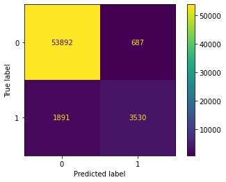
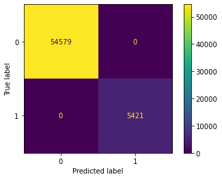
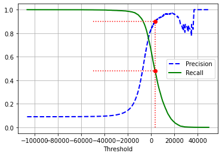
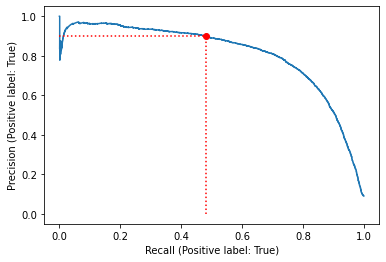
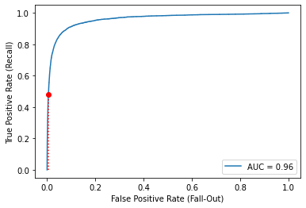
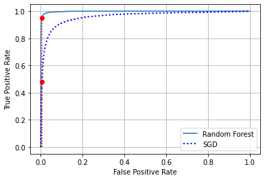
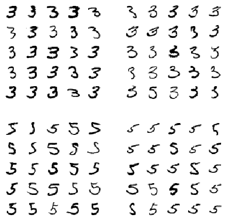
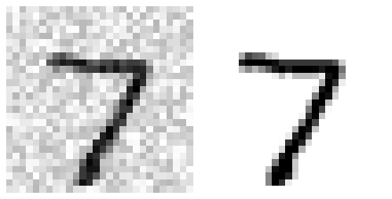
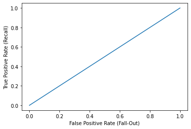
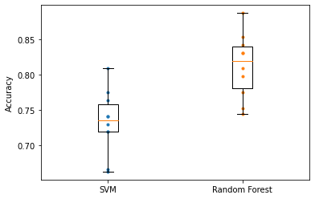

分类
Contents
分类#
import matplotlib.pyplot as plt
import numpy as np
import pandas as pd
import matplotlib as mpl
MNIST#
# from sklearn.datasets import fetch_openml
# X, y = fetch_openml('mnist_784', version=1, return_X_y=True, data_home='data')
# np.savez(file="../../datasets/handson/mnist_784.npz", X=X, y=y)
mnist_784 = np.load('../../datasets/handson/mnist_784.npz', allow_pickle=True)
X, y = mnist_784['X'], mnist_784['y']
X.shape
(70000, 784)
y.shape
(70000,)
np.sqrt(X.shape[1])
28.0
some_digit = X[0]
plt.imshow(some_digit.reshape(28, 28), cmap=mpl.cm.binary)
plt.axis("off")
plt.show()

y[0]
'5'
def plot_digit(data, ax):
image = data.reshape(28, 28)
ax.imshow(image, cmap=mpl.cm.binary, interpolation="nearest")
ax.axis("off")
_, axes = plt.subplots(10, 10, figsize=(6, 3), constrained_layout=True)
example_images = X[:100]
for ind, ax in enumerate(axes.flatten()):
img_data = example_images[ind]
plot_digit(img_data, ax)
plt.show()

y = y.astype(np.int32)
X_train, X_test, y_train, y_test = X[:60000], X[60000:], y[:60000], y[60000:]
二元分类器#
y_train_5 = (y_train == 5)
y_test_5 = (y_test == 5)
y_train_5 = y_train_5.ravel()
y_test_5 = y_test_5.ravel()
from sklearn.linear_model import SGDClassifier
sgd_clf = SGDClassifier(max_iter=1000, tol=1e-3, random_state=42)
sgd_clf.fit(X_train, y_train_5)
SGDClassifier(random_state=42)In a Jupyter environment, please rerun this cell to show the HTML representation or trust the notebook.
On GitHub, the HTML representation is unable to render, please try loading this page with nbviewer.org.
SGDClassifier(random_state=42)
sgd_clf.predict([some_digit])
array([ True])
from sklearn.model_selection import cross_val_score
cross_val_score(sgd_clf, X_train, y_train_5, cv=3, scoring="accuracy")
array([0.95035, 0.96035, 0.9604 ])
from sklearn.model_selection import StratifiedKFold
from sklearn.base import clone
skfolds = StratifiedKFold(n_splits=3, shuffle=True, random_state=42)
for train_index, test_index in skfolds.split(X_train, y_train_5):
clone_clf = clone(sgd_clf)
X_train_folds, y_train_folds = X_train[train_index], y_train_5[train_index]
X_test_fold, y_test_fold = X_train[test_index], y_train_5[test_index]
clone_clf.fit(X_train_folds, y_train_folds)
y_pred = clone_clf.predict(X_test_fold)
n_correct = sum(y_pred == y_test_fold)
print(n_correct / len(y_pred))
0.9669
0.91625
0.96785
from sklearn.base import BaseEstimator
class Never5Classifier(BaseEstimator):
def fit(self, X, y=None):
pass
def predict(self, X):
return np.zeros((len(X), 1), dtype=bool)
from sklearn.model_selection import cross_val_score, cross_val_predict
never_5_clf = Never5Classifier()
cross_val_score(never_5_clf, X_train, y_train_5, cv=3, scoring="accuracy")
array([0.91125, 0.90855, 0.90915])
y_train_pred = cross_val_predict(sgd_clf, X_train, y_train_5, cv=3)
from sklearn.metrics import confusion_matrix, ConfusionMatrixDisplay
from sklearn.metrics import precision_score, recall_score, f1_score
cm = confusion_matrix(y_train_5, y_train_pred)
cm
array([[53892, 687],
[ 1891, 3530]])
cm_display = ConfusionMatrixDisplay(cm).plot()

y_train_perfect_predictions = y_train_5
cm2 = confusion_matrix(y_train_5, y_train_perfect_predictions)
cm2
array([[54579, 0],
[ 0, 5421]])
cm_display = ConfusionMatrixDisplay(cm2).plot()

precision_score(y_train_5, y_train_pred)
0.8370879772350012
recall_score(y_train_5, y_train_pred)
0.6511713705958311
f1_score(y_train_5, y_train_pred)
0.7325171197343846
y_scores = sgd_clf.decision_function([some_digit])
y_scores
array([2164.22030239])
threshold = 0
y_some_digit_pred = (y_scores > threshold)
y_some_digit_pred
array([ True])
threshold = 8000
y_some_digit_pred = (y_scores > threshold)
y_some_digit_pred
array([False])
y_scores = cross_val_predict(sgd_clf,
X_train,
y_train_5,
cv=3,
method="decision_function", n_jobs=2)
PR 曲线#
from sklearn.metrics import precision_recall_curve, PrecisionRecallDisplay
precisions, recalls, thresholds = precision_recall_curve(y_train_5, y_scores)
def plot_precision_recall_vs_threshold(ax, precisions, recalls, thresholds):
ax.plot(thresholds, precisions[:-1], "b--", label="Precision", lw=2)
ax.plot(thresholds, recalls[:-1], "g-", label="Recall", lw=2)
ax.legend(loc="center right")
ax.set(xlabel="Threshold")
ax.grid(True)
recall_90_precision = recalls[np.argmax(precisions >= 0.90)]
threshold_90_precision = thresholds[np.argmax(precisions >= 0.90)]
_, ax = plt.subplots(figsize=(6, 4))
plot_precision_recall_vs_threshold(ax, precisions, recalls, thresholds)
ax.plot([threshold_90_precision, threshold_90_precision], [0., 0.9], "r:")
ax.plot([-50000, threshold_90_precision], [0.9, 0.9], "r:")
ax.plot([-50000, threshold_90_precision],
[recall_90_precision, recall_90_precision], "r:")
ax.plot([threshold_90_precision], [0.9], "ro")
ax.plot([threshold_90_precision], [recall_90_precision], "ro")
plt.show()

(y_train_pred == (y_scores > 0)).all()
True
_, ax = plt.subplots(figsize=(6, 4))
PrecisionRecallDisplay(precision=precisions,
recall=recalls,
pos_label=sgd_clf.classes_[1]).plot(ax=ax)
ax.plot([recall_90_precision, recall_90_precision], [0., 0.9], "r:")
ax.plot([0.0, recall_90_precision], [0.9, 0.9], "r:")
ax.plot([recall_90_precision], [0.9], "ro")
plt.show()

threshold_90_precision = thresholds[np.argmax(precisions >= 0.90)]
threshold_90_precision
3370.0194991439566
y_train_pred_90 = (y_scores >= threshold_90_precision)
precision_score(y_train_5, y_train_pred_90)
0.9000345901072293
recall_score(y_train_5, y_train_pred_90)
0.4799852425751706
ROC 曲线#
from sklearn.metrics import roc_curve, RocCurveDisplay, auc, roc_auc_score
fpr, tpr, thresholds = roc_curve(y_train_5,
y_scores,
pos_label=sgd_clf.classes_[1])
roc_auc = auc(fpr, tpr)
roc_auc
0.9604938554008616
_, ax = plt.subplots(figsize=(6, 4))
RocCurveDisplay(fpr=fpr, tpr=tpr, roc_auc=roc_auc).plot(ax=ax)
fpr_90 = fpr[np.argmax(tpr >= recall_90_precision)]
ax.plot([fpr_90, fpr_90], [0., recall_90_precision], "r:")
ax.plot([0.0, fpr_90], [recall_90_precision, recall_90_precision], "r:")
ax.plot([fpr_90], [recall_90_precision], "ro")
ax.set(xlabel='False Positive Rate (Fall-Out)',
ylabel='True Positive Rate (Recall)')
plt.show()

from sklearn.metrics import roc_auc_score
roc_auc_score(y_train_5, y_scores)
0.9604938554008616
from sklearn.ensemble import RandomForestClassifier
forest_clf = RandomForestClassifier(n_estimators=100, random_state=42)
y_probas_forest = cross_val_predict(forest_clf,
X_train,
y_train_5,
cv=3,
method="predict_proba", n_jobs=2)
y_scores_forest = y_probas_forest[:, 1] # score = proba of positive class
fpr_forest, tpr_forest, thresholds_forest = roc_curve(y_train_5,
y_scores_forest)
recall_for_forest = tpr_forest[np.argmax(fpr_forest >= fpr_90)]
_, ax = plt.subplots(figsize=(6, 4))
roc_auc = auc(fpr_forest, tpr_forest)
roc_display = RocCurveDisplay(fpr=fpr_forest, tpr=tpr_forest,
roc_auc=roc_auc).plot(ax=ax)
roc_display.line_.set_label("Random Forest")
ax.plot(fpr, tpr, "b:", lw=2, label="SGD")
ax.plot([0.0, fpr_90], [recall_90_precision, recall_90_precision], "r:")
ax.plot([fpr_90, fpr_90], [0., recall_90_precision], "r:")
ax.plot([fpr_90, fpr_90], [0., recall_for_forest], "r:")
ax.plot([fpr_90], [recall_90_precision], "ro")
ax.plot([fpr_90], [recall_for_forest], "ro")
ax.grid(True)
ax.legend(loc="lower right")
plt.show()

roc_auc_score(y_train_5, y_scores_forest)
0.9983436731328145
y_train_pred_forest = cross_val_predict(forest_clf, X_train, y_train_5, cv=3)
precision_score(y_train_5, y_train_pred_forest)
0.9905083315756169
recall_score(y_train_5, y_train_pred_forest)
0.8662608374838591
多类别分类#
y_train = y_train.ravel()
sgd_clf.fit(X_train, y_train)
sgd_clf.predict([some_digit])
array([3], dtype=int32)
sgd_clf.decision_function([some_digit])
array([[-31893.03095419, -34419.69069632, -9530.63950739,
1823.73154031, -22320.14822878, -1385.80478895,
-26188.91070951, -16147.51323997, -4604.35491274,
-12050.767298 ]])
# The following cells may take close to 30 minutes to run, or more depending on your hardware.
# cross_val_score(sgd_clf, X_train, y_train, cv=3, scoring="accuracy")
from sklearn.preprocessing import StandardScaler
scaler = StandardScaler()
X_train_scaled = scaler.fit_transform(X_train.astype(np.float64))
# cross_val_score(sgd_clf, X_train_scaled, y_train, cv=3, scoring="accuracy")
误差分析#
y_train_pred = cross_val_predict(sgd_clf, X_train_scaled, y_train, cv=3, n_jobs=4)
conf_mx = confusion_matrix(y_train, y_train_pred)
conf_mx
array([[5577, 0, 22, 5, 8, 43, 36, 6, 225, 1],
[ 0, 6400, 37, 24, 4, 44, 4, 7, 212, 10],
[ 27, 27, 5220, 92, 73, 27, 67, 36, 378, 11],
[ 22, 17, 117, 5227, 2, 203, 27, 40, 403, 73],
[ 12, 14, 41, 9, 5182, 12, 34, 27, 347, 164],
[ 27, 15, 30, 168, 53, 4444, 75, 14, 535, 60],
[ 30, 15, 42, 3, 44, 97, 5552, 3, 131, 1],
[ 21, 10, 51, 30, 49, 12, 3, 5684, 195, 210],
[ 17, 63, 48, 86, 3, 126, 25, 10, 5429, 44],
[ 25, 18, 30, 64, 118, 36, 1, 179, 371, 5107]])
_, ax = plt.subplots(figsize=(8, 6))
ConfusionMatrixDisplay(conf_mx).plot(ax=ax)
<sklearn.metrics._plot.confusion_matrix.ConfusionMatrixDisplay at 0x157dfb6d0>

_, ax = plt.subplots(figsize=(8, 6))
row_sums = conf_mx.sum(axis=1, keepdims=True)
norm_conf_mx = conf_mx / row_sums
np.fill_diagonal(norm_conf_mx, 0)
ax.matshow(norm_conf_mx, cmap=plt.cm.gray)
<matplotlib.image.AxesImage at 0x16a2c5720>

def plot_digit(ax, data):
image = data.reshape(28, 28)
ax.imshow(image, cmap=mpl.cm.binary, interpolation="nearest")
ax.axis("off")
from itertools import product
prod = product([3, 5], repeat=2)
prod2 = product([0, 1], repeat=2)
fig = plt.figure(figsize=(8, 8))
outer_grid = fig.add_gridspec(2, 2, wspace=0.2, hspace=0.2)
for p, (a, b) in zip(prod, prod2):
inner_grid = outer_grid[a, b].subgridspec(5, 5)
axes = inner_grid.subplots()
X_c = X_train[(y_train == p[0]) & (y_train_pred == p[1])][:25]
for ind, ax in enumerate(axes.flatten()):
plot_digit(ax, X_c[ind, :])
plt.show()

多标签分类#
from sklearn.neighbors import KNeighborsClassifier
y_train_large = (y_train >= 7)
y_train_odd = (y_train % 2 == 1)
y_multilabel = np.c_[y_train_large, y_train_odd]
knn_clf = KNeighborsClassifier()
knn_clf.fit(X_train, y_multilabel)
KNeighborsClassifier()In a Jupyter environment, please rerun this cell to show the HTML representation or trust the notebook.
On GitHub, the HTML representation is unable to render, please try loading this page with nbviewer.org.
KNeighborsClassifier()
knn_clf.predict([some_digit])
array([[False, True]])
# y_train_knn_pred = cross_val_predict(knn_clf, X_train, y_multilabel, cv=3)
# f1_score(y_multilabel, y_train_knn_pred, average="macro")
多输出分类#
noise = np.random.randint(0, 100, (len(X_train), 784))
X_train_mod = X_train + noise
noise = np.random.randint(0, 100, (len(X_test), 784))
X_test_mod = X_test + noise
y_train_mod = X_train
y_test_mod = X_test
some_index = 0
_, axes = plt.subplots(1, 2, figsize=(6, 3), constrained_layout=True)
plot_digit(axes[0], X_test_mod[some_index])
plot_digit(axes[1], y_test_mod[some_index])
plt.show()

knn_clf.fit(X_train_mod, y_train_mod)
clean_digit = knn_clf.predict([X_test_mod[some_index]])
_, ax = plt.subplots(figsize=(6, 4))
plot_digit(ax, clean_digit)

随机分类器#
from sklearn.dummy import DummyClassifier
dmy_clf = DummyClassifier(strategy="prior")
y_probas_dmy = cross_val_predict(dmy_clf,
X_train,
y_train_5,
cv=3,
method="predict_proba")
y_scores_dmy = y_probas_dmy[:, 1]
from sklearn.metrics import roc_curve, RocCurveDisplay
fprr, tprr, thresholdsr = roc_curve(y_train_5, y_scores_dmy)
_, ax = plt.subplots(figsize=(6, 4))
RocCurveDisplay(fpr=fprr, tpr=tprr).plot(ax=ax)
ax.set(xlabel='False Positive Rate (Fall-Out)',
ylabel='True Positive Rate (Recall)')
[Text(0.5, 0, 'False Positive Rate (Fall-Out)'),
Text(0, 0.5, 'True Positive Rate (Recall)')]

KNN 分类器#
from sklearn.neighbors import KNeighborsClassifier
knn_clf = KNeighborsClassifier(weights='distance', n_neighbors=4)
knn_clf.fit(X_train, y_train)
KNeighborsClassifier(n_neighbors=4, weights='distance')In a Jupyter environment, please rerun this cell to show the HTML representation or trust the notebook.
On GitHub, the HTML representation is unable to render, please try loading this page with nbviewer.org.
KNeighborsClassifier(n_neighbors=4, weights='distance')
y_knn_pred = knn_clf.predict(X_test)
from sklearn.metrics import accuracy_score
accuracy_score(y_test, y_knn_pred)
0.9714
from scipy.ndimage import shift
_, ax = plt.subplots(figsize=(6, 4))
def shift_digit(digit_array, dx, dy, new=0):
return shift(digit_array.reshape(28, 28), [dy, dx], cval=new).reshape(784)
plot_digit(ax, shift_digit(some_digit, 5, 1, new=100))

X_train_expanded = [X_train]
y_train_expanded = [y_train]
for dx, dy in ((1, 0), (-1, 0), (0, 1), (0, -1)):
shifted_images = np.apply_along_axis(shift_digit,
axis=1,
arr=X_train,
dx=dx,
dy=dy)
X_train_expanded.append(shifted_images)
y_train_expanded.append(y_train)
X_train_expanded = np.concatenate(X_train_expanded)
y_train_expanded = np.concatenate(y_train_expanded)
X_train_expanded.shape, y_train_expanded.shape
((300000, 784), (300000,))
knn_clf.fit(X_train_expanded, y_train_expanded)
KNeighborsClassifier(n_neighbors=4, weights='distance')In a Jupyter environment, please rerun this cell to show the HTML representation or trust the notebook.
On GitHub, the HTML representation is unable to render, please try loading this page with nbviewer.org.
KNeighborsClassifier(n_neighbors=4, weights='distance')
y_knn_expanded_pred = knn_clf.predict(X_test)
accuracy_score(y_test, y_knn_expanded_pred)
0.9763
ambiguous_digit = X_test[2589]
knn_clf.predict_proba([ambiguous_digit])
array([[0.24579675, 0. , 0. , 0. , 0. ,
0. , 0. , 0. , 0. , 0.75420325]])
_, ax = plt.subplots(figsize=(6, 4))
plot_digit(ax, ambiguous_digit)

数据放大#
from scipy.ndimage import shift
def shift_image(image, dx, dy):
shifted_image = shift(image.reshape(28, 28), [dy, dx],
cval=0,
mode="constant")
return shifted_image.reshape([-1])
image = X_train[1000]
shifted_image_down = shift_image(image, 0, 5)
shifted_image_left = shift_image(image, -5, 0)
titles = ["Original", "Shifted Down", "Shifted Left"]
imgs = [image, shifted_image_down, shifted_image_left]
_, axes = plt.subplots(1, 3, figsize=(12, 4), constrained_layout=True)
for ax, img, title in zip(axes, imgs, titles):
ax.imshow(img.reshape(28, 28), interpolation="nearest", cmap="Greys")
ax.set(xticks=[], yticks=[], title=title)
plt.show()

X_train_augmented = [image for image in X_train]
y_train_augmented = [label for label in y_train]
for dx, dy in ((1, 0), (-1, 0), (0, 1), (0, -1)):
for image, label in zip(X_train, y_train):
X_train_augmented.append(shift_image(image, dx, dy))
y_train_augmented.append(label)
X_train_augmented = np.array(X_train_augmented)
y_train_augmented = np.array(y_train_augmented)
shuffle_idx = np.random.permutation(len(X_train_augmented))
X_train_augmented = X_train_augmented[shuffle_idx]
y_train_augmented = y_train_augmented[shuffle_idx]
knn_clf = KNeighborsClassifier(n_neighbors=5,
algorithm='auto',
weights='distance')
# knn_clf.fit(X_train_augmented, y_train_augmented)
# y_pred = knn_clf.predict(X_test)
# accuracy_score(y_test, y_pred)
泰坦尼克数据集#
train_data = pd.read_csv("../../datasets/handson/titanic_train.csv")
test_data = pd.read_csv("../../datasets/handson/titanic_test.csv")
train_data.head()
| PassengerId | Survived | Pclass | Name | Sex | Age | SibSp | Parch | Ticket | Fare | Cabin | Embarked | |
|---|---|---|---|---|---|---|---|---|---|---|---|---|
| 0 | 1 | 0 | 3 | Braund, Mr. Owen Harris | male | 22.0 | 1 | 0 | A/5 21171 | 7.2500 | NaN | S |
| 1 | 2 | 1 | 1 | Cumings, Mrs. John Bradley (Florence Briggs Th... | female | 38.0 | 1 | 0 | PC 17599 | 71.2833 | C85 | C |
| 2 | 3 | 1 | 3 | Heikkinen, Miss. Laina | female | 26.0 | 0 | 0 | STON/O2. 3101282 | 7.9250 | NaN | S |
| 3 | 4 | 1 | 1 | Futrelle, Mrs. Jacques Heath (Lily May Peel) | female | 35.0 | 1 | 0 | 113803 | 53.1000 | C123 | S |
| 4 | 5 | 0 | 3 | Allen, Mr. William Henry | male | 35.0 | 0 | 0 | 373450 | 8.0500 | NaN | S |
数据介绍#
Survived: that’s the target, 0 means the passenger did not survive, while 1 means he/she survived.
Pclass: passenger class.
Name, Sex, Age: self-explanatory
SibSp: how many siblings & spouses of the passenger aboard the Titanic.
Parch: how many children & parents of the passenger aboard the Titanic.
Ticket: ticket id
Fare: price paid (in pounds)
Cabin: passenger’s cabin number
Embarked: where the passenger embarked the Titanic
缺失值#
train_data.info()
<class 'pandas.core.frame.DataFrame'>
RangeIndex: 891 entries, 0 to 890
Data columns (total 12 columns):
# Column Non-Null Count Dtype
--- ------ -------------- -----
0 PassengerId 891 non-null int64
1 Survived 891 non-null int64
2 Pclass 891 non-null int64
3 Name 891 non-null object
4 Sex 891 non-null object
5 Age 714 non-null float64
6 SibSp 891 non-null int64
7 Parch 891 non-null int64
8 Ticket 891 non-null object
9 Fare 891 non-null float64
10 Cabin 204 non-null object
11 Embarked 889 non-null object
dtypes: float64(2), int64(5), object(5)
memory usage: 83.7+ KB
数值特征#
train_data.describe()
| PassengerId | Survived | Pclass | Age | SibSp | Parch | Fare | |
|---|---|---|---|---|---|---|---|
| count | 891.000000 | 891.000000 | 891.000000 | 714.000000 | 891.000000 | 891.000000 | 891.000000 |
| mean | 446.000000 | 0.383838 | 2.308642 | 29.699118 | 0.523008 | 0.381594 | 32.204208 |
| std | 257.353842 | 0.486592 | 0.836071 | 14.526497 | 1.102743 | 0.806057 | 49.693429 |
| min | 1.000000 | 0.000000 | 1.000000 | 0.420000 | 0.000000 | 0.000000 | 0.000000 |
| 25% | 223.500000 | 0.000000 | 2.000000 | 20.125000 | 0.000000 | 0.000000 | 7.910400 |
| 50% | 446.000000 | 0.000000 | 3.000000 | 28.000000 | 0.000000 | 0.000000 | 14.454200 |
| 75% | 668.500000 | 1.000000 | 3.000000 | 38.000000 | 1.000000 | 0.000000 | 31.000000 |
| max | 891.000000 | 1.000000 | 3.000000 | 80.000000 | 8.000000 | 6.000000 | 512.329200 |
train_data["Survived"].value_counts()
0 549
1 342
Name: Survived, dtype: int64
类别特征#
train_data["Pclass"].value_counts()
3 491
1 216
2 184
Name: Pclass, dtype: int64
train_data["Sex"].value_counts()
male 577
female 314
Name: Sex, dtype: int64
train_data["Embarked"].value_counts()
S 644
C 168
Q 77
Name: Embarked, dtype: int64
构建管线#
from sklearn.base import BaseEstimator, TransformerMixin
class DataFrameSelector(BaseEstimator, TransformerMixin):
def __init__(self, attribute_names):
self.attribute_names = attribute_names
def fit(self, X, y=None):
return self
def transform(self, X):
return X[self.attribute_names]
from sklearn.pipeline import Pipeline
from sklearn.impute import SimpleImputer
num_pipeline = Pipeline([
("select_numeric", DataFrameSelector(["Age", "SibSp", "Parch", "Fare"])),
("imputer", SimpleImputer(strategy="median")),
])
num_pipeline.fit_transform(train_data)
array([[22. , 1. , 0. , 7.25 ],
[38. , 1. , 0. , 71.2833],
[26. , 0. , 0. , 7.925 ],
...,
[28. , 1. , 2. , 23.45 ],
[26. , 0. , 0. , 30. ],
[32. , 0. , 0. , 7.75 ]])
class MostFrequentImputer(BaseEstimator, TransformerMixin):
def fit(self, X, y=None):
self.most_frequent_ = pd.Series(
[X[c].value_counts().index[0] for c in X], index=X.columns)
return self
def transform(self, X, y=None):
return X.fillna(self.most_frequent_)
from sklearn.preprocessing import OneHotEncoder
cat_pipeline = Pipeline([
("select_cat", DataFrameSelector(["Pclass", "Sex", "Embarked"])),
("imputer", MostFrequentImputer()),
("cat_encoder", OneHotEncoder(sparse=False)),
])
cat_pipeline.fit_transform(train_data)
array([[0., 0., 1., ..., 0., 0., 1.],
[1., 0., 0., ..., 1., 0., 0.],
[0., 0., 1., ..., 0., 0., 1.],
...,
[0., 0., 1., ..., 0., 0., 1.],
[1., 0., 0., ..., 1., 0., 0.],
[0., 0., 1., ..., 0., 1., 0.]])
from sklearn.pipeline import FeatureUnion
preprocess_pipeline = FeatureUnion(transformer_list=[
("num_pipeline", num_pipeline),
("cat_pipeline", cat_pipeline),
])
X_train = preprocess_pipeline.fit_transform(train_data)
X_train
array([[22., 1., 0., ..., 0., 0., 1.],
[38., 1., 0., ..., 1., 0., 0.],
[26., 0., 0., ..., 0., 0., 1.],
...,
[28., 1., 2., ..., 0., 0., 1.],
[26., 0., 0., ..., 1., 0., 0.],
[32., 0., 0., ..., 0., 1., 0.]])
处理标签#
y_train = train_data["Survived"]
from sklearn.svm import SVC
svm_clf = SVC(gamma="auto")
svm_clf.fit(X_train, y_train)
SVC(gamma='auto')In a Jupyter environment, please rerun this cell to show the HTML representation or trust the notebook.
On GitHub, the HTML representation is unable to render, please try loading this page with nbviewer.org.
SVC(gamma='auto')
X_test = preprocess_pipeline.transform(test_data)
y_pred = svm_clf.predict(X_test)
模型评估#
from sklearn.model_selection import cross_val_score
svm_scores = cross_val_score(svm_clf, X_train, y_train, cv=10)
svm_scores.mean()
0.7329588014981274
from sklearn.ensemble import RandomForestClassifier
forest_clf = RandomForestClassifier(n_estimators=100, random_state=42)
forest_scores = cross_val_score(forest_clf, X_train, y_train, cv=10)
forest_scores.mean()
0.8126466916354558
箱线图#
_, ax = plt.subplots(figsize=(6, 4))
ax.plot([1] * 10, svm_scores, ".")
ax.plot([2] * 10, forest_scores, ".")
ax.boxplot([svm_scores, forest_scores], labels=("SVM", "Random Forest"))
ax.set(ylabel="Accuracy")
plt.show()

train_data["AgeBucket"] = train_data["Age"] // 15 * 15
train_data[["AgeBucket", "Survived"]].groupby(['AgeBucket']).mean()
| Survived | |
|---|---|
| AgeBucket | |
| 0.0 | 0.576923 |
| 15.0 | 0.362745 |
| 30.0 | 0.423256 |
| 45.0 | 0.404494 |
| 60.0 | 0.240000 |
| 75.0 | 1.000000 |
train_data["RelativesOnboard"] = train_data["SibSp"] + train_data["Parch"]
train_data[["RelativesOnboard",
"Survived"]].groupby(['RelativesOnboard']).mean()
| Survived | |
|---|---|
| RelativesOnboard | |
| 0 | 0.303538 |
| 1 | 0.552795 |
| 2 | 0.578431 |
| 3 | 0.724138 |
| 4 | 0.200000 |
| 5 | 0.136364 |
| 6 | 0.333333 |
| 7 | 0.000000 |
| 10 | 0.000000 |